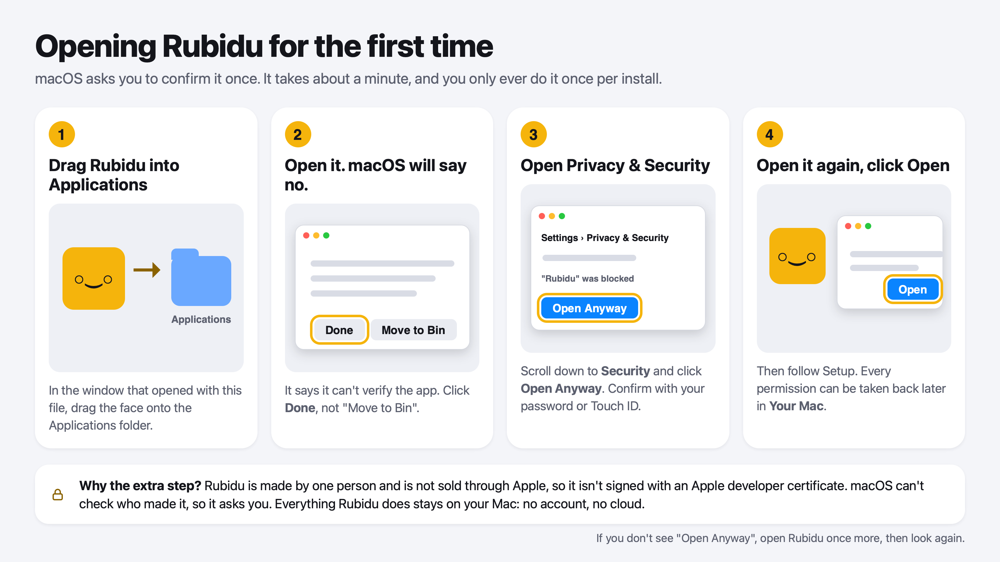

Opening Rubidu for the first time
Rubidu is made by one independent developer and is not sold through Apple, so it is not signed with an Apple developer certificate. The first time you open it, macOS says it cannot verify the app and asks you to confirm. It takes about a minute and you only do it once per install.

The four steps
- Drag Rubidu into the Applications folder in the window that opens with the download.
- Open it from Applications. macOS says it can't verify the app. Click Done, not Move to Bin.
- Open System Settings, then Privacy & Security. Scroll down to the Security section, click Open Anyway next to the message about Rubidu, and confirm with your password or Touch ID.
- Open Rubidu again and click Open. Then follow Setup. You can take any permission back later, in one press, from the Rubidu window under Your Mac.
If you don't see Open Anyway
Open Rubidu once more, then look again: macOS only shows the button for a short while after it blocks an app.
Questions
Is it safe to click Open Anyway?
That button tells macOS you trust the app. Only do it for software you got from the official Rubidu page. Rubidu runs on your Mac and has no account and no cloud; the next page shows how to check that for yourself.
Why isn't Rubidu signed by Apple?
Apple's developer program is a yearly fee and a review of every release. Rubidu is an independent project that is sold directly, so it asks you to confirm it once instead.